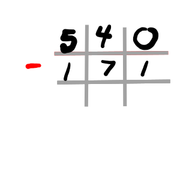
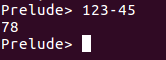
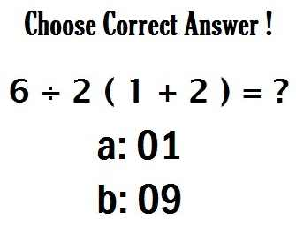
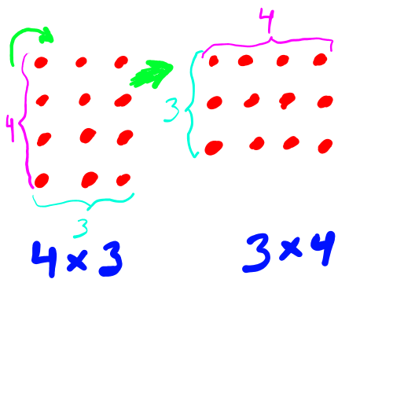
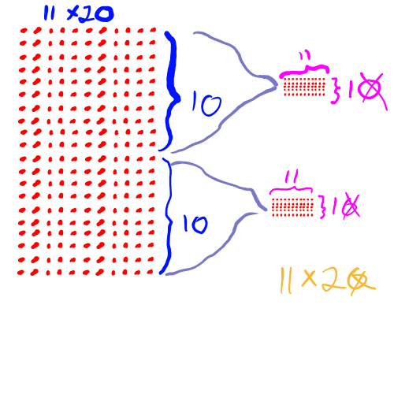

Chapter 1: Counting---Computing---Extending number systems
Abstract:
We discuss ways of representing numbers, including one-to-one numerals, base-10, base-2, and base-16. We see table methods and software methods for computing in each, for the operations of plus, minus, multiply, and divide. We also discuss exponentiation, roots, and logarithms.
Then we discuss extensions of number systems as closures under inverse operations and give interpretations of these.
Case study
Imagine a scribe living 4,000 years ago in Sumeria, tasked with accounting for the kingdom's assets and liabilities. He must go from city to city counting stores of grain, beasts of burden, soldiers and the debts owed them by the city. He then needs to report to the king with combined values. Every good story needs stakes, so imagine that if the soldiers can't be adequately paid then they'll revolt and kill the king; the king would like to know what will happen in advance, so he can decide whether he should assissinate some soldiers to preempt a coup. Time is running out, so we need a fast calculation method!
Table of Contents
Counting (0, 1, ... , 9, 0, 1, 0, 1, ..., f)
Computing (+, -, ∴, *, %, ^, .)
Addition and subtraction
Multiplication and division
Exponents, roots, logarithms
Extending number systems (ℕ, ℤ, ℚ, ℝ, ℂ)
Natural numbers and integers
Rationals and reals
Complex
1. Counting
The easiest and most obvious way to write numbers is to make a mark for everything you count.
One
|
Two
||
Three
|||
and so on. This presents a challenge for large numbers, but it's easy to think of a way to resolve that: Just group large quantities into a single symbol like the Romans did. You could write 17 as XVII to represent a group of ten with a group of five and two more units. This is fine as far as counting goes, but now imagine trying to add numbers like this! Without converting into our numeral system, try adding IVXX to XXIX. It may be hard to resist the temptation to put them into our numeral system and that's a sign that it's much better than this.
What makes our numeral system so much better? Of course intuitively, we sum the ones-digits first and carry extras to the next digit--and this is what we have that the Romans didn't: digits. We work on what's called a base-10 digit system because we have ten symbols, 0 through 9. The represent, of course, the numbers zero through nine, at which point we run out of symbols so we mark a new place to indicate a grouping. Hence to represent ten we write 10 with a zero in the ones-place to keep track of digit places.
Interestingly, the Sumerian civilization existed thousands of years before the Romans and used a base-system. Why the Romans never heard about it, or heard about it and never adopted it, we can only speculate: The Romans were famous for a few things, but listening and thinking were not among them. Still we wouldn't want to adopt the Sumerian system today, it was base-60! That means they had 60 symbols for each of the numbers 0 through 59. The number 60 was then written by putting the symbol for 1 in the next digit place and a zero in the ones-place.
That's not entirely true, for one thing they didn't have a symbol for 0. For another thing, it's kind of a stretch to say that they had a distinct symbol for each number up to 59. They had a kind of Roman system up to 59, so that for instance one was written |, and two ||, and three |||, and so on. (Actually, they were wedge-like symbols.) The would group things by tens with a < symbol, so that eleven was written <| and 33 as <<<|||, and so on. 60 would have then been written as | since there was no symbol for zero, which means they wrote | for both 1 and 60. We might think it's confusing but they didn't--I guess it's rare to be unable to tell from context whether a 1 or 60 was intended.
This base-60 system is from whence we derive traditions like 60 seconds in a minute and 60 minutes in an hour, and 360 degrees in a circle. However, we will not use this example and instead focus on base systems that are more relevant to the modern day, namely binary numbers or base-2. In this system we have only the two symbols 0,1. I will use the slightly distinct font and color to denote binary numerals. In this system, already when we want to count to two, we have run out of symbols and must cycle back to the start and increment the next digit place. Hence two is written 10.
Exercise set 1:
Write the numbers zero through ten in binary.
0,1,10,11,100,101,110,111,1000,1001,1010
Find the decimal (i.e. base-10) representation of the binary numbers 10, 100, and 1000. Explain the pattern that you find.
2, 4, and 8. These are powers of 2. This is just like how 10, 100, and 1000 are powers of 10 in base-10.
Try to find a procedure for adding binary numbers, for instance, find the sum 1101 + 110.
Of course base-2 is famous for its use in computers, where 0 represents something like an off state (really in a circuit this is a low-current state) and an on state (really high current). But also base-16 is famous, also called "hexadecimal". Of course we have 16 symbols in this base system. We standardly use 0, 1, ..., 9, a, b, c, d, e, f. I will again distinguish hexadecimal representation by a distinct font and color. Here a represents the number ten and f represents fifteen. Write the numbers 20 through 30 in hexadecimal numbers, and find a way to add numbers. For instance find the sum da7 + 8f.
14, 15, 16, 17, 18, 19, 1a, 1b, 1c, 1d, 1e
Using a table method like the one above you should get the sum da7 + 8f = e36.
2. Computing
A. Addition and subtraction
Of course the table method for computing large sums is familiar in base-10, presumably, from early education. Still I'll give the following example.
For this reason we prefer some kind of a base-system and use this tabular method for computation. Of course these days tabular methods are almost antiquated. Today we rely on software to compute, and I'll represent software computations in the programming language Haskell. To acquire the language, you'll need to search for the software and follow the instructions that you find on their webpage. I'll produce screen shots from the the Prelude console--which is by default what you use to begin with--like so.
Prelude> 1+2 3
As just some notes on language which will perhaps help clarify things later one, if x, y are any two numbers (i.e. they stand in place of numbers, so that perhaps x is 1 or perhaps 33: whatever number x is, what I say about it will be true) then we call x + y the "sum", we call x and y individually the "summands".
Now getting back to arithmetic, the meaning of a sum is familiar, it counts the total when two separate groups are joined. If we think of this as a process, then we can also think about inverting the process: Taking a group and separating out a subgroup. For example if we have a group of seven apples and separate out three, then we want to know how many are left over. The inverse of addition is subtraction, which we write as 7-3 and call "the difference". The 7 is called the "subtrahend" and the 3 the "minuend". No doubt many readers think these names are silly but it can help to be able to clearly identify the parts that I want to talk about.
Now in the expression 4 = 7 - 3 it will be helpful to think of the difference, 7 - 3, as meaning "that number which, when added to 3, will give you 7". That is to say,
the difference is that number which, when added to the minuend, will give the subtrahend
We could also write it in an equation: If x = y - z then the difference, x, is that number which when added to z would produce y or
$$x=y-z\quad\therefore\quad x+z=y$$
So for example if we pick values 7 = 10 - 3 then 7 is the difference of 10, the subtrahend, and 3, the minuend. Therefore 7 (difference) + 3 (minuend) = 10 (subtrahend). In this version you can gleen the addition rule for equations--but more on that later. Also note that I use the symbol ∴ to mean "therefore".
Now we want to develop a method for computing the difference. Of course we want to reverse the addition process but that's easier said than done. You might just assume the high school method of computation, but why does it work--is it what you would have come up with on your own? If we literally reversed the addition process we'd start from having three numbers on three rows, and there wouldn't be any need for computation, so that can't literally be what we do. We need to start from two numbers like 540 and 171, and work backwards to figure out what 540-171 is.
Rather than cut straight to the answer, I'll beat around the bush to illustrate that there are options here. One way to do this is guess-and-check, and this is actually how a lot of people do mental arithmetic to get the answer quickly. If we take 171 and add 300 we get close (we wouldn't add 400 because that takes us too far). That gets us to 471. To close the cap to 500 we could add another 30, oops, make that 20 so we get 491; add another 9 to get 500, add another 40 and we're there. All together we added 300+20+9+40 = 369 so therefore 171+369 = 540 or put another way, 540-171 = 369, the answer we were looking for.
There are other ways to guess-and-check that some people like more, like say we take 171 and add 400 because even though it over-shoots the goal we can subtract to walk it backwards down to 540. I'll leave that for you to ponder, but the guess-and-check algorithm is a little undesirable because it's not very systematic--can we do better?

If we try to systematize the guess-and-check algorithm then we would first find the difference of the largest part of the numbers, in this case the hundreds digit. That's not the usual way to do it, but it works!
You just have to do borrowing from left-to-right this way but the algorithm is intuitive and correct. In essence we figure out what we have to subtract just in the largest digits, and then do likewise in smaller digits. If any digits do not make sense for subtraction, like the 4-7 in the tens-digit here, you can borrow from a larger digit.
Exercise set 2:
Develop a subtraction algorithm for binary numbers and use it to find 11011-1010 and 1010-111.
11011-1010 = 10001, no borrowing was necessary. 1010-111 = 11
Explain why the numbers in a sum are called summands, with no distinction between the left and right, while the numbers in a difference have the distinct names subtrahend and minuend.
The order of addition doesn't matter, so that the left and right summands could be swapped without changing the value. For subtraction this is not true; if the subtrahend and minuend were swapped in 7-3 we would get 3-7 which is clearly not the same. In fact, as of now we haven't said what to do with 3-7.
Use Haskell to find 123-45.

Find 10 - 7 + 2. Next think about a second possible value that this expression could have. How can we resolve the ambiguity?
It's likely that the first value you gave is the same one you would get if you entered this in Haskell: 5. However, this could also have been computed by "patient" evaluation. Some programming languages use patient evaluation--as contrasted with greedy evaluation--wherein the program would read "10 - ..." and wait until it fully read the "..." before evaluating the expression. It would therefore take the "..." to be 7+2 which is 9 so that the program would read this as equivalent to 10-9 which is 1. Haskell uses greedy evaluation so that it reads the - as binding to the first expression it finds, in this case the 7. Thus it immediately computes 10-7 as 3 and then adds 2.
The familiar way to deal with orders of operations is PEMDAS in America and other rules encountered elsewhere in the world. I hate PEMDAS. For one thing I'm tired of these dumb Facebook posts

This is not an interesting Math question. For another thing, complex rules about orders of operations are unnecessarily confusing. Haskell does better by treating every operation with the same rule: Be greedy. Still, this can be improved slightly by using a completely different approach: Use Polish notation. This is also called prefix notation, contrasted with what most people are used to, infix notation. To write 10 - 5 you would instead write - 10 5. You put the operation in front and the inputs come after. It's confusing for some people at first, but that's just because they don't understand functions. We will soon talk about functions, and forcing people to use Polish notation--I'd be curious to find out if Polish students are better and faster at understanding functions simply because they use this notation.
Anyway, here's another reason why Polish notation is better and still resolves order of operations questions: It never needs parentheses to resolve orders of operations. + - 3 2 1 has to mean (3-2) + 1. Here's why: the + operation needs two input numbers, and it can't be just - since that's not a number. So the + operation here has to read everything starting at the - as some number which it needs to have evaluated before it can produce the sum. So we have to first evaluate the minus: The order of operations has been forced upon us. One way to think about the gain in not having to use parentheses is that you can easily state this expression to someone over the phone: "Plus minus 3 2 1" is completely unambiguous. Its equivalent in infix notation may not be much worse, "3 minus 2 plus 1" but as we get more operations and the procedure for evaluating gets more complicated, this lack of any possibility of ambiguity becomes more valuable.
Find the value of - + 12 - 10 3 4 in two ways, one by repeatedly finding operators followed by two number so that you can compute them (the first example would be - 10 3), and then doing it again and again until all operators are gone, and two by re-writing the sentence with infix notation and parentheses.
First compute - 10 3 so that this becomes - + 12 7 4
then compute + 12 7 so this becomes - 19 4
then compute so the answer is 15.
With infix notation this would have been (12 + (10 - 3)) - 4.
Something that often comes up in surprising ways--in Computer Science, Probability Theory, and other pure Mathematics topics--is the need to sum two groups that share members. To give a physical example, some people in this world are fast and others are furious. A smaller subset of people are both fast and furious. If the number of fast people is 10 and the number of furious people is 5, how many people are there? Of course, if there are no people who are both fast and furious, then these are distinct groups, and the usual sum is appropriate: There are + 10 5 = 15 people. In this case we say the sets are "disjoint".
If every furious person is fast, then that makes the furious people what we call a "subset" of the fast people. The concept of a subset will be employeed extensively in later topics, so it's worth learning early. Of course the concept itself is just as simple as it seems, so don't be intimidated. We can depict each of these scenarios, disjoint sets and subsets, in a picture like so.
Of course, there are possibilities in-between these two. It should also be clear that there are no possibilities beyond these two: You could not have, say, all of the fast people also being furious because this would imply that there are 10 furious people when we know there are only 5. If we have an in-between case, how do we know the number of people who are both fast and furious? Well, since every possibility is ... possible, then this question cannot definitively be answered. More information is needed. Suppose we know that there are 12 people in total, but still 10 are fast and 5 are furious. How many are both? If the furious were a subset of fast, there would be 10 people--too few. If we split off two of them, meaning 2 people who are furious but not fast, we'd have this picture.
That makes 12 people, 10 fast, 5 furious, and 3 who are both fast and furious.
a) Suppose there are 10 fast, 5 furious, and 4 people who are both. How many people are there in total?
b) Suppose there are 10 fast, 5 furious, and a total of 14 people. How many are both fast and furious?
c) Suppose there are 10 fast, 5 furious, and 8 people who are fast but not furious. How many people are both fast and furious? How many people are there in total?
d) Can we make a formula for this situation? First let's establish some notation. First let's suppose that A and B are two sets. They could be sets of people, sets of numbers, or other things. Let's say A = {1,2,3} so that A is the set of numbers 1, 2, and 3. This is just a collection of stuff, so don't be intimidated by the notation--it's not very complicated. Also let's say, for example, B = {3,4,5}. We will define the "union" of these sets as $$A\cup B = \{1, 2, 3, 4, 5\}$$ so that the union is the collection of everything in either set. We define the "intersection" as $$A\cap B=\{3\}$$ which is the set of everything that overlaps. We could label the picture in this way.
Let's also use the notation |A| to denote the size of the set, so that in this example |A| = 3 and also |B| = 3. We can also say $$|A\cup B| = 5 \quad |A\cap B|=1$$.
So the question again is: Can we make a formula relating each of the quantities $$|A|, |B|, |A\cup B|, |A\cap B|$$
a) 16 people.
b) 1 person.
c) To get the numbe of people who are both, we need only think of the fast people. We know there are 10 in total, and of them 8 are not furious, meaning 2 are furious. This is the number of people who are both fast and furious.
To get the total number of people, we know there are 5 furious. On top of that there are 8 people who are fast but not furious. Since those groups are disjoint (you should demonstrate to yourself that they are) then we can simply add them and get everyone. Thus there are 13 people in total.
d) $$|A\cup B| = -\ + \ |A|\ \ |B|\ \ |A\cap B|$$
Haskell has the ability to implement prefix notation by writing
Prelude> (+) 10 8 18
but this has two draw-backs. One is that this uses two parentheses, eliminating some of the gains made by not having to write parentheses. The other is that this doesn't compose well with other operations. If you write
Prelude> (-) (+) 1 2 3
<interactive>:13:1 ...
this should--in the theory of prefix notation--result in 6. But instead it results in an error. This is because of the extreme voracity of Haskell's greedy evaluation! It reads "(-) (+) ..." and already is trying to put the plus operation into the minus operation--but of course the minus operation needs numbers not operations! We could wrap expressions in parentheses to force Haskell to wait a little while, which would look like
Prelude> (-) ((+) 1 2) 3
and this will work, but now we haven't merely lost our gains but are heading in the totally wrong direction!
Unfortunately there's no good way out of this. There are calculators (physical and online) out there which take Reverse Polish Notation (RPN), you can google and find them. They do the same thing as Polish notation but in reverse: If you want to write 1+2-3 in RPN you would write 1 2 + 3 - so that 1 2 + is evaluated first to 3 and then 3 3 - is evaluated to 0. But to use them you'll have to make sure you correctly translate from Polish to RPN. I leave it to you to decide the strategy you want to employ in verifying your calculations, but I will continue to write in Polish notation.
B. Multiplication and division
One perspective on what multiplication is, is that it's repeated addition. We could say that * 2 3 (or using infix notation, 2*3) means "two repeated three" or + + 2 2 2 (using infix, 2+2+2). As a notational device, by the way, instead of writing + + + 2 2 2 2 and so on for various long sums, I'll instead take + 2 2 2 2 to perform the sum over the list of numbers. This is not merely a hack for the current topic, but will be useful when trying to express other topics like sums over sequences, the average of a list, the dot-product, and other contexts where we want to apply an operation over a list. This comes up perhaps surprisingly often in Mathematics. For instance, we will learn about the factorial operation in a few sections, which we write as 4! for example, is * 4 3 2 1. Again using infix notation we would say 4! is 4*3*2*1.
Anyway, multiplication comes with its own vocabulary. The result of multiplication is called the "product" and the components are called "factors". As with addition we don't distinguish between the left and right factors in a product. This time the reason is just a step more complicated and deeper than it was with addition, because as we've set things up, the factor on the left actually means something different from the factor on the right. * 4 3 means + 4 4 4 whereas * 3 4 means + 3 3 3 3 and one might reasonably demand an explanation of why these values always comes out to the same thing no matter which numbers we use in the product. Here is something not quite a proof but still a good demonstration. A product can be thought of as a grid of objects that we're trying to count, where the left factor tells us the width (left-right) of the grid and the right factor tells us the height. Reversing the numbers just corresponds to rotating the grid but doesn't actually change the number of objects in the grid.

We could just leave the whole topic at that, but it would make calculation laborious to repeatedly add, so let's come up with a table algorithm for multiplication. If we tried to do the same thing here as we did for addition then we'd multiply * 11 22 by only multiplying the matching coordinates and get 22, which is obviously wrong.
Instead what we need to do is realize that to compute * 11 2 we multiply every coordiante by 2. Why? Because we will be doubling the number of ones, and the number of tens, etc. Still we need to get * 11 22, so we can do this by first getting * 11 20 and then * 11 2. Then we sum the results. Getting * 11 20 is the same as * 11 2 but with a 0 at the end of it, so it's 220. If you want to justify this, realize that * 11 20 can be thought of as 20 summed 11 times (we've just argued that we can reverse things if we want). You could instead take 2 summed 11 times and regard each thing that you sum as really being a group of 10. This picture illustrates.

Now we can find * 11 22.
In this process we are implicitly using the distributive property, so let's focus on that a minute. The distributive property with infix notation is probably familiar: 2*(3+x) = 6+2x. More generally we could write x*(y+z) = xy + xz. I only write with infix first in case you're more comfortable with it--I'll stop comforting you soon, but here's how you should read it using Polish notation: * x + y z = + * x y * x z. Notice that this method of calculation uses distributivity by using * 11 22 = * 11 + 20 2 = + * 11 20 * 11 2.
Moving on, division is the opposite of multiplication, and there are a lot of analogies available from what we said about subtraction as the opposite of addition. Multiplication is like taking a group of groups and dumping them together--think of 5 apples in 10 baskets, and you dump them into a barrel. Then division is like taking apples back out of the barrel and placing them 5 per basket, counting up the number of baskets they occupy. That is to say / 50 5 = 10. Of course / 50 10 also makes sense. We could say that this is the number of baskets if we placed apples 10 per basket, but there's another way to think of this too--and both perspectives are valuable. The other way to think about / 50 10 = 5 is that this says, if you took 50 apples and 10 baskets (the number of baskets fixed at the start of the process, not the number of apples per basket) then you would obtain as a result, the apples per basket. Thus every division calculation has two interpretations possible.
For more vocabulary, the result of division is the "quotient", the left side of the / is the "dividend" and the right side is the "divisor". And just as we said something similar with subtraction, we can say that
the quotient is the number which, when multiplied by the divisor, produces the dividend
An example is the fact that the quotient / 10 2 is 5, and when 5 is multiplied by 2 you get 10. Algebraically we could write
$$x = \ast \, y\,\, z \quad \therefore \quad / x\,\, y = z$$
As for an algorithm to compute the division, we again use guess-and-check to start us off. If we want to divide 2328 by 24 we could multiply by 10 and then 100 to get us into the ballpark, but of course * 24 100 = 2400 so we've over-shot. We can back-track to 10 but then pick larger and larger numbers until we go too far. * 24 90 = 2160 so this is as close as we can get in the tens-digit. That still leaves - 2328 2160 = 168 to go. So we move down in the digits to get a finer-grained approach. Here * 24 7 = 168 so what we've found is that + * 24 7 * 24 90 = 2328. If we use the distributive property of multiplication (or, in this case you might call it "factoring") we can factor out 24 and say * 24 + 7 90 = 2328. Or yet again * 24 97 = 2328. Using the equivalent expression we can say / 2328 24 = 97. The division algorithm really just organizes these steps in a table.
Exercise set 3
Find * 1011 10 and * 1011 11. Check your answer by converting to decimal numbers (base-10) and calculating in Haskell.
Find / 1100 10 and / 1100 11.
Quickly find * / 1100 10 10.
It is interesting to know all of the possible factors (i.e. all divisors) of a given number. Find all of the possible factors of 10, there are four of them. Also find all of the possible factors of 11010.
The divisors of 10 are 1, 2, 5, and 10. The divisors of 11010 obviously include 1 and 11010, and it's only slightly less obvious that 10 divides it and leaves 1101 as a quotient. The next number to check is whether 11 divides it. We could try to compute / 11010 11 but it's easier to compute / 1101 11. Why does this still give us the right answer? That is a question that we'll explore more in a future chapter, but the intuition should be clear: We now know you can divide it into 10 groups. If you can then divide each of these into 11 groups, then it's possible to divide the whole thing into that many groups. It's the same way that, since 12 is divisible by 2, we could then find out whether it's also divisible by 3 by either going back and dividing / 12 3, or we could instead just find / 6 3. Since the answer is a whole number, then 12 is divisible by 3 as well.
Getting back to the task, we will compute / 1101 11 and find that this does not result in a whole number. The next number to check is 100 but I think it is very clear that the division will not result in a whole number becase the quotient doesn't end in two 0s. As we keep dividing, we will find that in fact the only other number that divides this is indeed 1101.
In total the factors are 1, 10, 1101, 11010.
It's likely that you recall remainders from high school or elsewhere. The fast statement is that, when a number does not divide "evenly" like / 5 2, we don't want to talk about fractions (indeed, as far as this section is concerned, such numbers don't exist yet) so to compromise, we get as close as possible and say that / 5 2, which is 2, and then find the remainder as - 5 * 2 2 = 1. With this we can write 5 = + * 2 2 1. Notice that if the remainder is 0, like in / 18 6 = 3 we could write the nicer but similar statement 18 = * 6 3.
Now do the same with binary numbers. Find the quotient and remainder of / 10101 101.
By saying that 10101 = + * 101 100 1 it should be clear that this tells you the quotient is 100 is the quotient and 1 is the remainder. Be sure you understand how this works, it'll be useful in later chapters.
How can we get Haskell to tell us quotients and remainders? If we compute
Prelude> (/) 123 5
24.6
I think it's clear that the 24 part is the quotient. How do we get the remainder? Well, knowing the quotient, we can get the remainder as (-) 123 ((*) 5 24). But now, how do we do this in one line, rather than always having to read part of the quotient and process it with our human brains to then figure out the remainder? We need the ability to round a number down so that we only have the integer part of the number. We can do this with the floor function.
Prelude> floor 4.7
4
Try to write a single line of Haskell code, using only the numbers 123 and 5, that will output the remainder of / 123 5.
(-) 123 ((*) (floor ( (/) 123 5)) 5)
We've encountered a few properties of operations by now, including the commutative property, expressed by the fact that + x y = + y x and for multiplication * x y = * y x. Then there was the distributive law * x + y z = + * x y * x z. Of course subtraction is not a commutative operation since - 7 3 is not the same as - 3 7, and so also division is not commutative. Are subtraction and division distributive?
As a second question, there is another important property, associativity. We can express the associativity of addition with + (+ x y) z = + x (+ y z). There really is no way to write the associative law without parentheses, since this is what the law is about. Commutativity says "it doesn't matter whether the left and right entries of a single operation are swapped". Associativity says "order of operations doesn't matter with many instance of the same operator". Are subtraction, multiplication, and division associative?
Division is distributive into subtraction: / - x y z = - / x z / y z. You can check several cases to convince yourself, like / - 8 4 2 = / 4 2 = 2 and - / 8 2 / 8 4 = - 4 2 = 2. You could also convince yourself with a geometric argument about grouping things together.
Subtraction is not associative: - (- 3 2) 1 = 0 but - 3 - 2 1 = 2. A similar demonstration shows division is not associative. Multiplication is.
Most people are familiar with the FOIL operation (so-called "first-inside-outside-last"). If you don't recall it, I'll remind you that in infix notation it's (a+b)(c+d) = ac+ad+bc+bd. Many people know the rule without knowing why it's true. It's really just the result of distributing multiplication twice. First if we distribute a+b then we get $$(a+b)c + (a+b)d$$
If you now distribute the factor of c in the left summand and distribute the factor of d in the right summand, you'll have the FOIL law.
As an exercise, reproduce this demonstration but use prefix notation instead.
As another exercise, find a geometric argument (like the dots used above) to justify FOIL.
As we've said, distribution is $$*\ a\ +\ b\ c = +\ *\ a\ b\ *\ a\ c$$ But the thing about an equality is, if it works in one direction it also works in the other. (Officially this is called "symmetry".) So not only can we use this to say, for instance * 2 + 3 4 = 14 = + * 2 3 * 2 4, but we can also use this for factoring. So we can say + * 2 x 2 = * 2 + x 1.
So now for the exercises:
a) Distribute * 2 + 3 x and * + x 2 3.
b) Factor + 6 * 2 x and + * 3 x 9.
c) Factor + + * a b * a c + * d b * d c
Haskell has the ability to produce lists of repeated numbers. Summing over them will illustrate multiplication.
How could we illustrate division in Haskell, in some similar way? It requires us to be able to take a group and split it up. The best way I've found to represent this is to import the Data.List.Split module. After you import this module, you'll be able to use the chunksOf function.
This output might be confusing if you're not used to programming--it's a list of lists. First of all, the whole thing is a list, starting with [ and ending with ]. The first element of this list is [1,2] and the second element is [3,4]. Of course this element, [1,2], is a list and has elements.
To make sure the idea of lists of lists is clear, let's spend just a bit more time on it. When you pull information out of a list, we call this "list comprehension". In Haskell you do that with the !! notation.
Haskell uses what's called "zero-indexing". The number 0 in the above example is an index, and so is the number 1 in the later line. We say it indexes the "zeroth" coordinate of the list. 7 is therefore indexed by 2. Using this indexing, we can access elements of a list and do stuff with them.
Prelude> (+) ([9, 8, 7] !! 0) ([9, 8, 7] !! 1)
If we return to our list of lists, try to predict what will be the output of
Prelude> [[1,2], [3,4]] !! 0
and predict the output of
Prelude> [[1,2], [3,4]] !! 0 !! 0
and try to write code that will access the number 3 from this list.
Also use the chunksOf function (possibly using parentheses often, in order to make sure the computer groups operations appropriately) together with the length function
Prelude> length [[1,2],[3,4]]
2
to illusrate the meaning of division. In particular, write something that uses the numbers 12 and 4 and illustrates / 12 4.
We've said already that + 2 3 4, for instance, is to be read as repeated addition and the value of this particular sum would be 9. What sense could we make of - 10 5 2 1? There are two legitimate readings, find them.
- - - 10 5 2 1 = - - 5 2 1 = - 3 1 = 2
and
- 10 - 5 - 2 1 = - 10 - 5 1 = - 10 4 = 6
Given this ambiguity, how should we resolve this? There are options, but we'll go with the one common to certain fields of Computer Science called left-associativity. Left-associativity would imply that we compute the left-most group of expressions first. In infix notation we would write a left-associative operation like a @ b @ c = (a @ b) @ c. Notice that this is not normal associativity since this will not in general produce the same result as a @ (b @ c) will. Because we choose to use left-associativity, the first computation where - 10 5 2 1 comes out to 2 is the one we will use.
Using left-associativity as in the previous problem, find / 100 2 2.
25
Ratios are very important throughout several subjects. A ratio fundamentally communicates that two quantities are chained together, made to increase or decrease together at a specified rate. The most obvious example is a cooking recipe. If for every teaspoon of baking soda you use two tablespoon of sugar, then supposing you use 10 teaspoons of baking soda then you must use 20 tablespoons of sugar. In this example we say that the "scale-factor" is 10, which is the number we multiply each term by.
If the ratio of cats to dogs in a pet store is 2:3 ("2 to 3") then we cannot know how many cats there are, nor how many dogs. There might be two cats, or four, or six, so on. Each number of cats would tell us the scale-factor though. If we learned there were 12 cats, the scale-factor would be 6 (= / 12 2). From knowing the scale factor we could determine the number of dogs, * 6 3 = 18.
If the scale-factor is unknown we call it k. Suppose that two quantities are in a ratio of x:y=3:7 and we know that the total quantity (x+y) is 70. What is x?
Here I will define the notion of the dot-product. This notion will have a surprisingly wide range of advanced applications, but at the introductory level is a pretty simple concept: You just multiply lists and then sum the result. I'll illustrate with the two lists, list1 = [3, 0, 7, 1] and list2 = [50, 20000, 1, 600]. The two lists must have the same length. This is how you could enter these lists in Haskell.
Prelude> let list1 = [3, 0, 7, 1]
Prelude> let list2 = [50, 20000, 1, 600]
In that case we can define their coordinate-wise product so that * list1 list2 = [150, 0, 7, 600]. To perform this in Haskell we need the zipWith function. You have to give the zipWith function three pieces of information: An operation, in this case multiplication, and two lists. It will then run through the two lists and perform the operation.
Prelude> zipWith (*) list1 list2
[50,20000,1,600]
What does this operation represent? list1 might represent a list of purchased items: 3 books, 0 cars, 7 pencils, 1 computer. list2 might represent their respective costs: $50, $20000, $1, and $600. The element-wise product then provides a list of expenses. If we sum the list, we get the total cost: $20651. This is the dot-product. We will denote the dot-product in the following way: * [3,0,7,1] t[50,20000,1,600] = $20651. The t stands for "transpose", which might make no sense at all right now. We will explain and explore this more when we get to Linear Algebra--for now, just accept it as a piece of notation.
There are several other applications of the dot-product from defining statistical measures to geometric transformations. For now just practice the mechanics: Compute * [1, 2, 3] t[4, 5, 6].
C. Exponentiation, roots, and logarithms
I'm sure you'll be shocked to learn that exponentiation is repeated multiplication just like multiplication is repeated addition. For instance ^ 3 4 = 81 because * 3 3 3 3 = 81. This operation at first seems like a dull extension of the previous operations, but has a few philosophical and computational issues.
First, why would we want this operation? For a very long time, say until about the 14th century in Europe, this operation was mostly ignored and avoided. The ancient Greeks had the concept of the square, to represent area. If a square--in the geometric sense--has edge length 4 then the square--in the arithmetic sense--of 4 is 16 (i.e. ^ 4 2 = 16), which is the area. (If we don't want to talk about area and volume yet, we can phrase this in terms of counting dots again.) The Greeks also had the concept of the cube to correspond to the concept of volume, say for a box. However, they did not speak of powers greater than three since they believed such a concept had no meaning. Why would we specifically want an operation like ^ where the numbers we put in it could be anything, meaninful or not? Couldn't we just speak of the square and cube only?
Answer: Well, one could just as easily flip the question and ask, why restrict?
For another thing, modern science has found applications of four-dimensional Geometry, and higher dimensions, and even infinite dimensional Geometry. For yet another thing, other interpretations are possible: for instance, we can use numbers for encryption and large powers of numbers can become useful for making decryption tough. More on all of these later.
As a point of calculation, things are worse. There is no table method. You just have to repeatedly multiply ... or use software.
Notice by the way that addition and multiplication were associative and commutative. Not so, on either account, for exponentiation. ^ 3 4 = 81 but ^ 4 3 = 64.
The vocabulary here is that the number occuring on the left is the "base" and the number on the right is the "exponent"--the result is the "exponential". Here is how we write it in Haskell.
Prelude> (^) 2 4
"The" inverse in particular is interesting here. In the previous two cases, addition and multiplication, there was just one inverse for each: subtraction and division. That is no longer true for exponentiation, precisely because exponentiation is not commutative. If we know that the exponential is, say, 16 and the exponent is, say, 2, then the base is 4: ^ 2 4 = 16. The inverse we are using here is the "root". How we choose to write this becomes a bit of an awkward conversation if I want to try to use a notation consistent with what we type in Haskell, so I'll save this until after some of the exercises below. But before getting to that, there is another inverse to discuss.
If we know that the exponential is 16 and the base is 4 then the exponent is 2. This inverse is the "logarithm". Notice that with the root we solve for the base and with the logarithm we solve for the exponent.
Exercise set 4:
We've said that exponentiation is neither associative nor commutative. Is it distributive?
Solve ^ x 2 = 25 and ^ 2 x = 8. In which case are you using the root and in which are you using the logarithm?
Draw a picture to illustrate the sentence: ^ 3 3 = 27